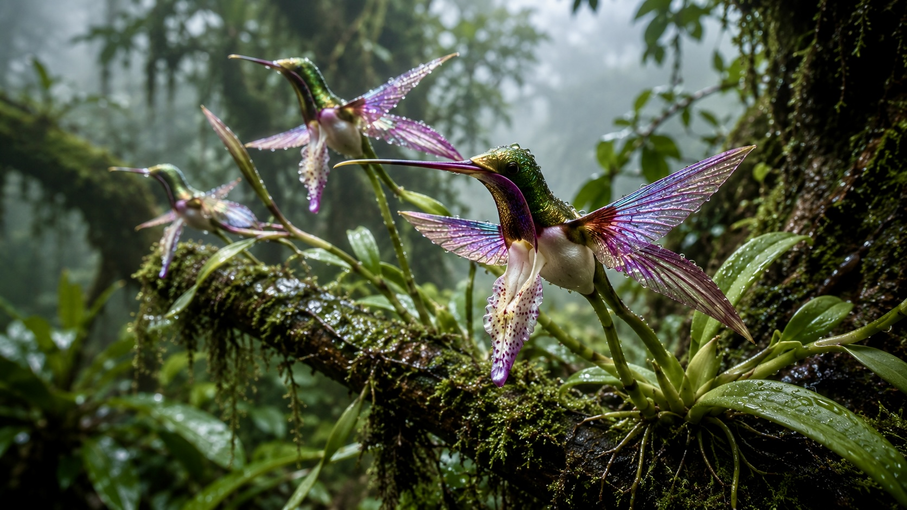
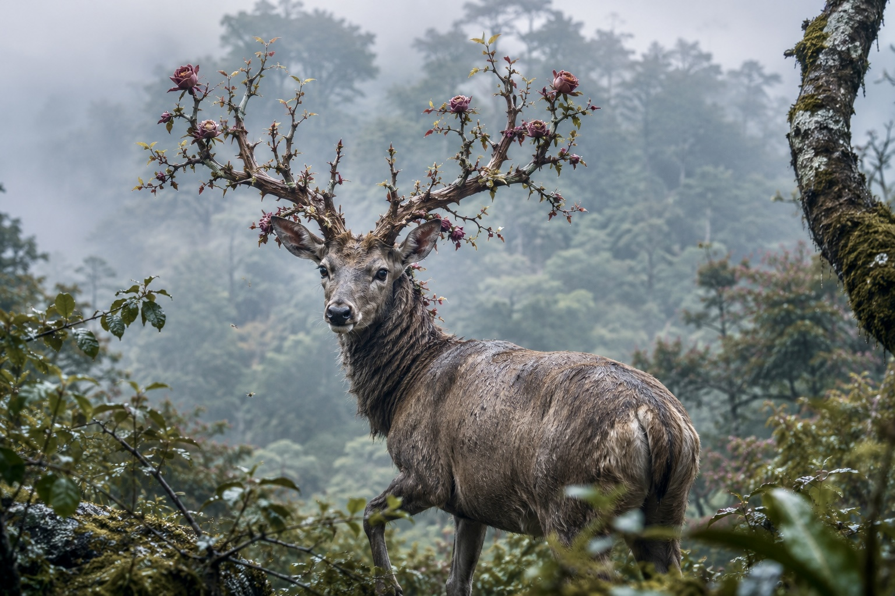
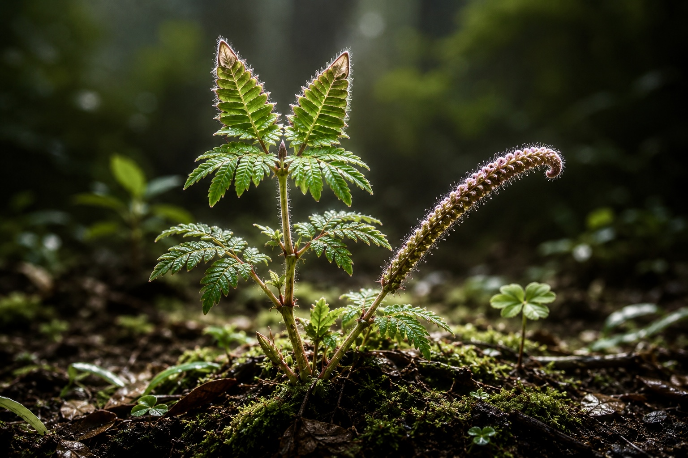
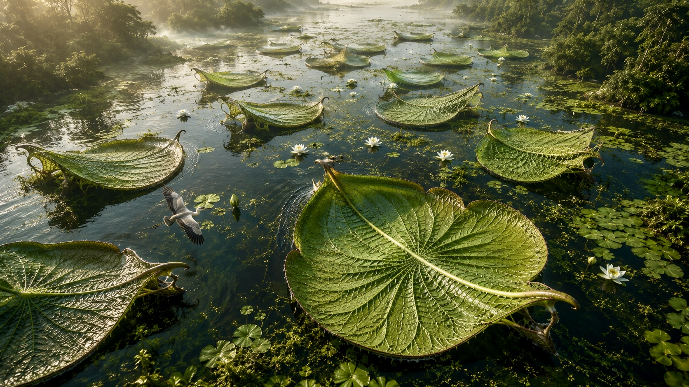

如果植物，
也有动物的模样。
这组创作里，我把动物与植物的形态放在一起：花瓣成了羽翼，鹿角开出花，巨树也有了象鼻。再用材质、光线和周围的环境，让这些想象看起来像是生活在同一个世界里。
我完成的部分：生物概念设计 · 动植物形态融合 · 系列画面
7 幅作品 · 点开图片，看完整画面






从一只小兽，
到一整片森林。
同样的想象，换一个尺度：松针与羽毛交叠，树干延伸成象鼻。周围的山、水和光，让这些生物有了自己的栖息地。


再往水面上看看。
像叶片，也像展开双翼的鳐。从贴近水面的视角到俯瞰，看看它们怎样组成一片生境。


